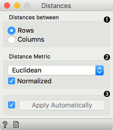
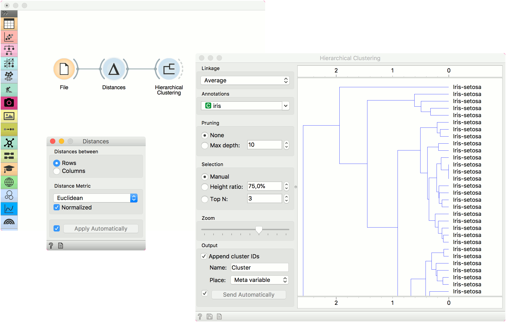
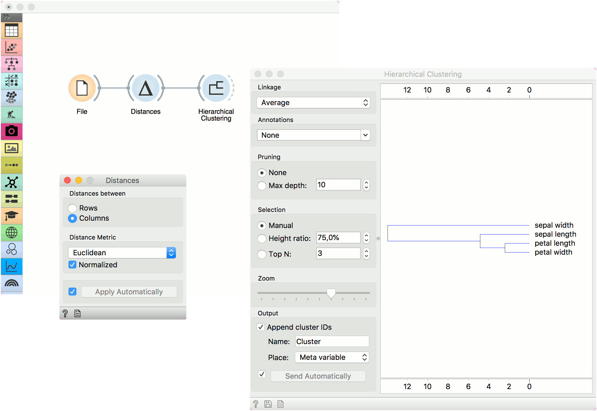
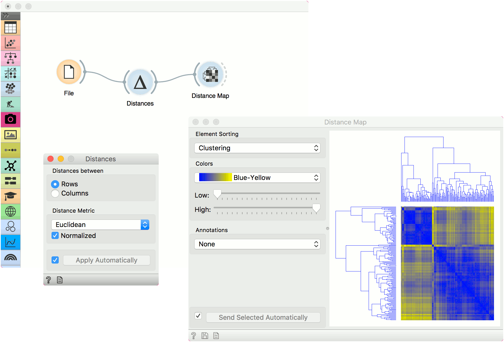

Distances
Computes distances between rows/columns in a dataset.
Inputs
- Data: input dataset
Outputs
- Distances: distance matrix
The Distances widget computes distances between rows or columns in a dataset. By default, the data will be normalized to ensure equal treatment of individual features. Normalization is always done column-wise.
Sparse data can only be used with Euclidean, Manhattan and Cosine metric.
The resulting distance matrix can be fed further to Hierarchical Clustering for uncovering groups in the data, to Distance Map or Distance Matrix for visualizing the distances (Distance Matrix can be quite slow for larger data sets), to MDS for mapping the data instances using the distance matrix and finally, saved with Save Distance Matrix. Distance file can be loaded with Distance File.
Distances work well with Orange add-ons, too. The distance matrix can be fed to Network from Distances (Network add-on) to convert the matrix into a graph and to Duplicate Detection (Text add-on) to find duplicate documents in the corpus.

Choose whether to measure distances between rows or columns.
Choose the Distance Metric:
- Euclidean (”straight line”, distance between two points)
- Manhattan (the sum of absolute differences for all attributes)
- Cosine (the cosine of the angle between two vectors of an inner product space). Orange computes the cosine distance, which is 1-similarity.
- Jaccard (the size of the intersection divided by the size of the union of the sample sets)
- Spearman(linear correlation between the rank of the values, remapped as a distance in a [0, 1] interval)
- Spearman absolute(linear correlation between the rank of the absolute values, remapped as a distance in a [0, 1] interval)
- Pearson (linear correlation between the values, remapped as a distance in a [0, 1] interval)
- Pearson absolute (linear correlation between the absolute values, remapped as a distance in a [0, 1] interval)
- Hamming (the number of features at which the corresponding values are different)
- Bhattacharyya distance (Similarity between two probability distributions, not a real distance as it doesn’t obey triangle inequality.)
Normalize the features. Normalization is always done column-wise. Values are zero centered and scaled. In case of missing values, the widget automatically imputes the average value of the row or the column. The widget works for both numeric and categorical data. In case of categorical data, the distance is 0 if the two values are the same (’green’ and ‘green’) and 1 if they are not (’green’ and ‘blue’).
Tick Apply Automatically to automatically commit changes to other widgets. Alternatively, press ‘Apply’.
Examples
The first example shows a typical use of the Distances widget. We are using the iris.tab data from the File widget. We compute distances between data instances (rows) and pass the result to the Hierarchical Clustering. This is a simple workflow to find groups of data instances.

Alternatively, we can compute distance between columns and find how similar our features are.

The second example shows how to visualize the resulting distance matrix. A nice way to observe data similarity is in a Distance Map or in MDS.
